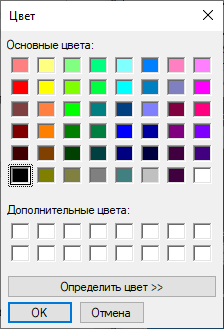
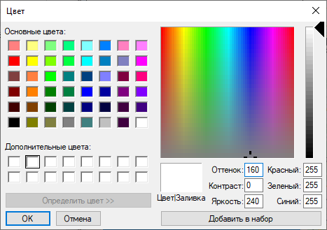
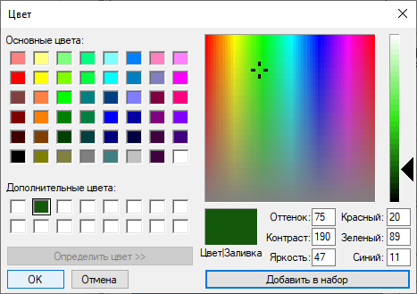

Крок 6. Вибір кольору полігону
Експерт натискає на кольоровий прямокутник справа біля поля «Вибор кольору полігона». Тоді з’явиться вікно вибору кольору, де в палітрі «Основні кольори» експерт повинен обрати колір та натиснути кнопку «ОК».
Якщо в палітрі немає потрібного кольору, то експерт повинен натиснути кнопку «Определить цвет». Тоді з’являться компоненти та поля для додання нового кольору. Експерт з шкали кольорів повинен обрати колір та натиснути кнопку «Добавить в набор».
Тепер, коли обрано новий колір, зелений колір, експертові необхідно натиснути на кнопку «ОК». Тоді вікно вибору кольору успішно закриється.
